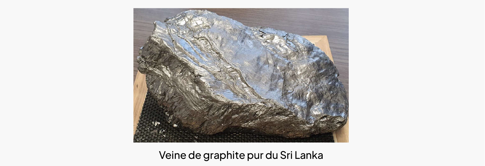
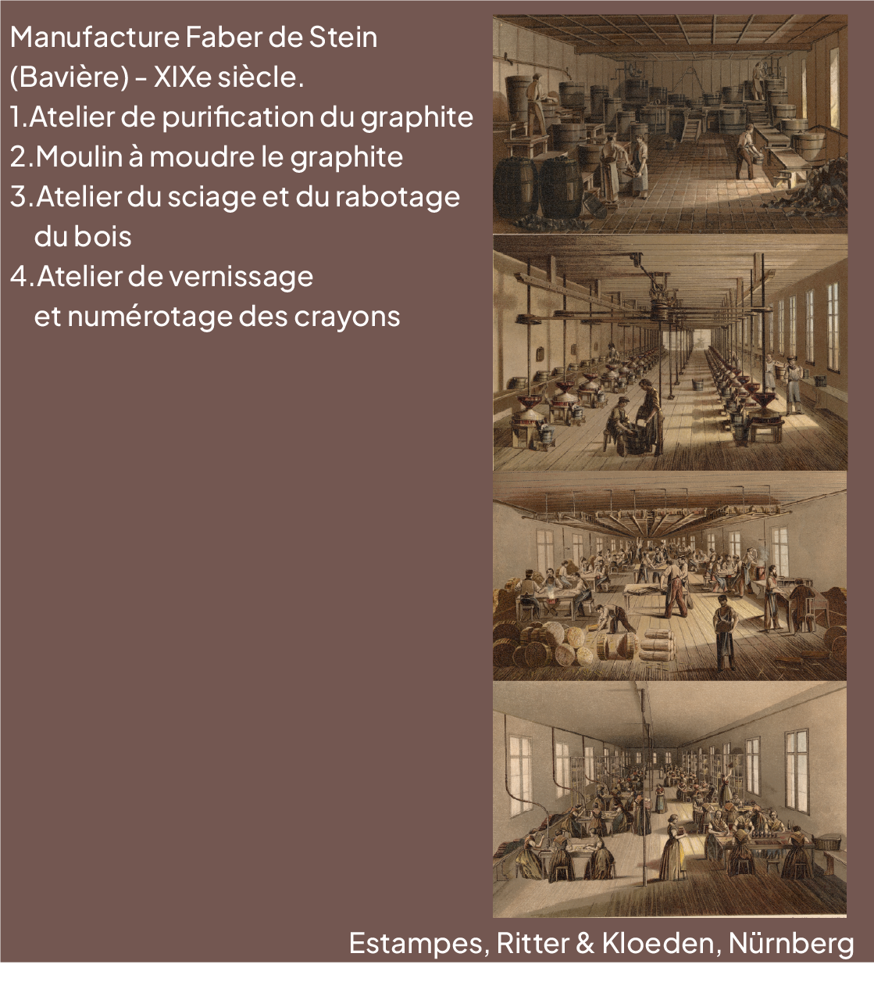
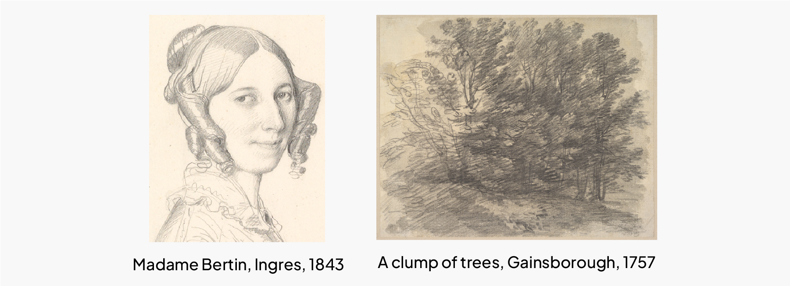
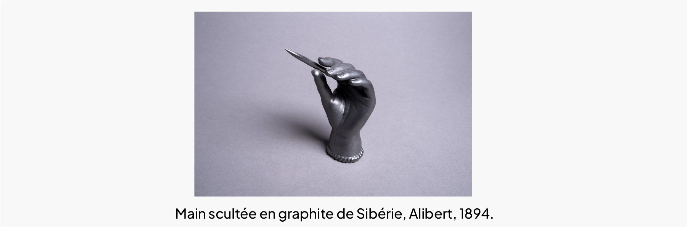

• Une matière à création
Les gisements de graphite
Les gisements de graphite de haute qualité se trouvent, pour la plupart, en veines le long de failles recoupant des couches de roches carbonées encaissantes.
Ces failles se forment lorsqu’un magma remonte des profondeurs de la Terre et augmente la pression sur la roche.
Simultanément, des réactions chimiques entre la roche et le magma intrusif libèrent des fluides riches en carbone qui circulent dans les failles sous l’action de la chaleur.
Le carbone y cristallise alors en graphite. Ce processus se retrouve dans les gisements historiques majeurs de Borrowdale en Angleterre et de Botogol en Sibérie.

De la mine au musée
Invention du « crayon d’Angleterre » Le graphite trouve sa principale application dans la fabrication des crayons dès le XVIe siècle.
Cette substance nouvelle et fragile, qui tache les mains, est rapidement gaînée de bois pour une maniabilité plus confortable et une résistance accrue à la casse : c’est l’invention, dans la région de Borrowdale, du « crayon d’Angleterre ».
A l’aube du XIXe siècle les manufactures familiales s’industrialisent, stimulées par la pression économique et le succès commercial planétaire de l’instrument.
Dans les plus grandes usines, la découpe dans les blocs de graphite d’un mince ruban (la mine) collé dans une gouttière entre deux pièces de bois se fait à la chaine dans des ateliers spécialisés.

Un instrument d’artiste
Les crayons en graphite sont des instruments privilégiés par les artistes pour l’exécution de leurs œuvres.
Aux prémisses de la Terreur en 1792, le français Nicolas-Jacques Conté dépose un brevet qui offre une nouvelle palette de nuances de gris.
Grâce à une mine composée de graphite mélangé à une quantité variable d’argile avant cuisson, la dureté est sensiblement augmentée, ce qui éclaircit la trace laissée sur le support.
La nomenclature de dureté des crayons désigne par la lettre H (Hardness) les mines dures riches en argile, B (Blackness) les mines tendres pauvres en argile et F (Fine) ou HB (Hard-Black) les mines intermédiaires.

